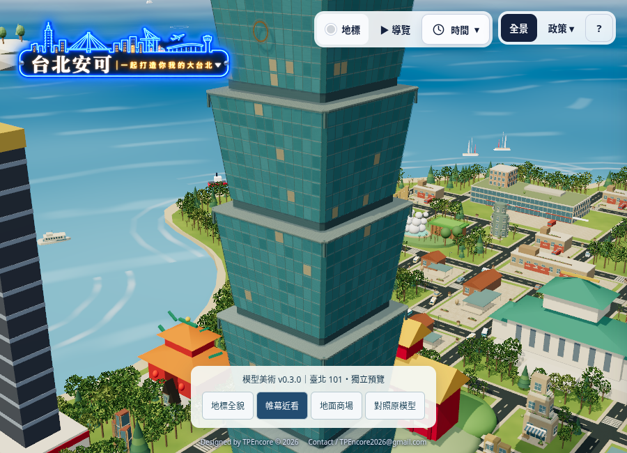
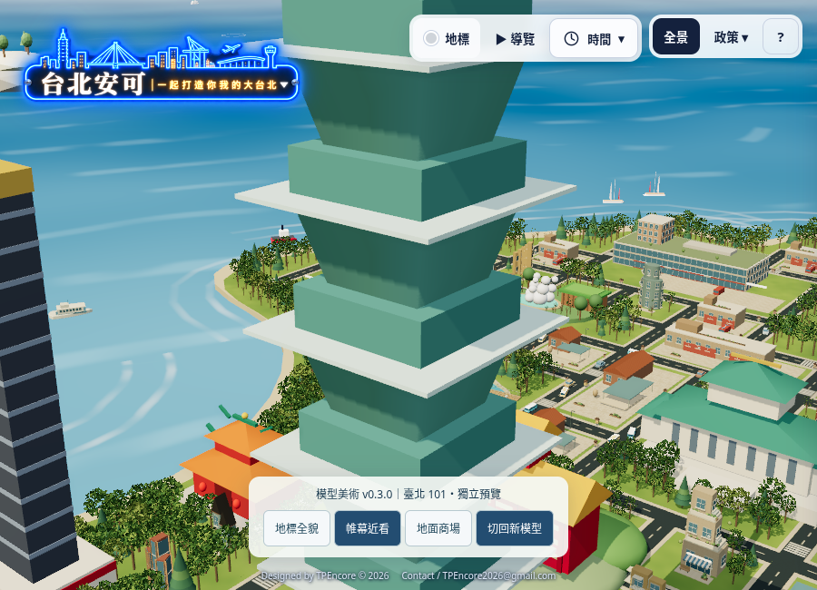
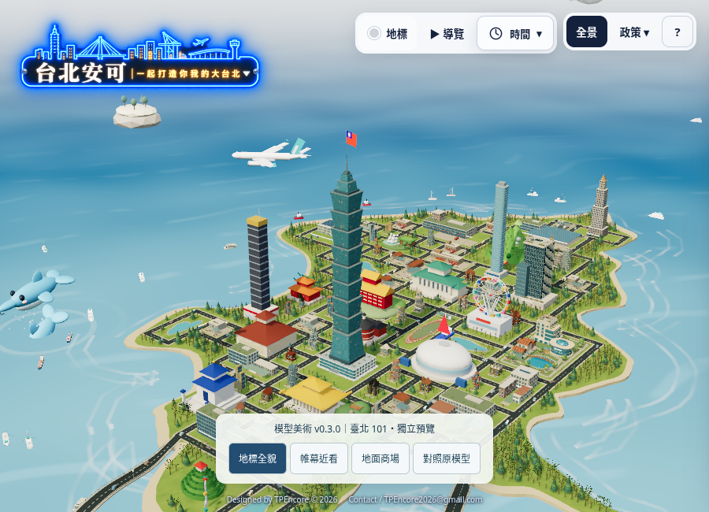
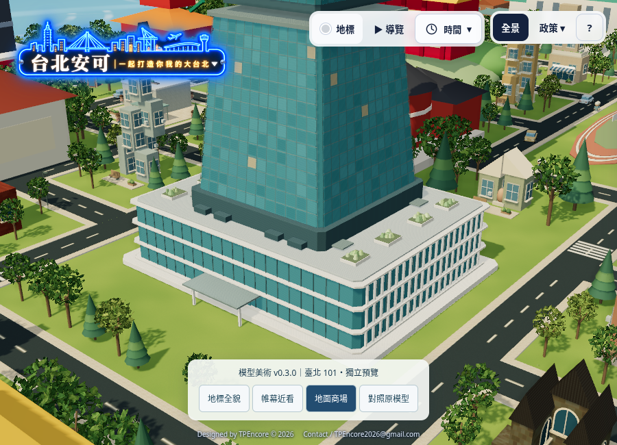
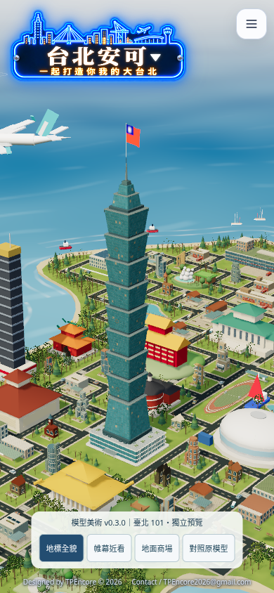

台北安可・政策市／獨立美術驗證從簡化量體，到專屬地標資產。
以 Blender 重新建立臺北 101 的辨識結構，匯出 GLB，在現有 Three.js 城市內實際呈現。以下比較使用相同鏡頭與光照，未以生成圖片代替成品。
開啟 3D 新舊切換 →新模型｜實際 3D 截圖

逐層窗框、玻璃、金屬分格、轉折與裝飾細節。原模型｜相同鏡頭

原模型保留在預覽內，可即時切換。地標全貌

地面商場

手機實際畫面

此版先驗收地標模型；全市建築與真實行政地理尚未重建。正式站與 v0.2.0 保持原樣。模型是美術重建，非建築測繪。